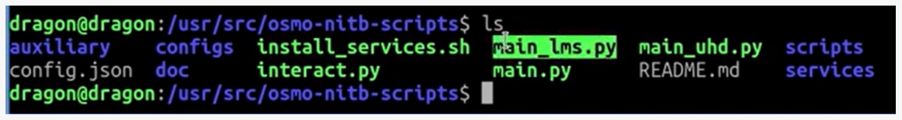
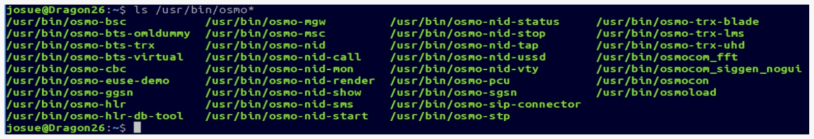

1. Contexto: por qué no se puede replicar el tutorial
El punto de partida
Como referencia se tomó un video en el que se levanta una red GSM con una LibreSDR Mini B220 y un teléfono Samsung GT-I9500, logrando incluso realizar una llamada.
Video de referencia
DragonOS FocalX LibreSDR (USRP) Hands On w/ Osmo NITB Scripts(UHD)
El tutorial usaba el programa osmo-nitb y un script de Python (main_uhd.py), que se ejecutaba así:
sudo ./main_uhd.py -u -d uhd --sip
Al intentar repetirlo en una versión moderna de DragonOS, esos componentes ya no están disponibles.

Software utilizado en el video de referencia.Qué cambió en Osmocom
osmo-nitb (Network In The Box) reunía toda la red celular en un solo programa. En las versiones actuales esa función se reparte en servicios independientes:
| Antes | Ahora |
|---|---|
Un solo programa: osmo-nitb |
Servicios separados: osmo-hlr, osmo-msc, osmo-bsc, osmo-mgw, osmo-stp, osmo-bts-trx, osmo-trx y otros |
Qué se puede hacer
En DragonOS 26.01 la arquitectura ya viene dividida en esos servicios. La siguiente captura muestra los componentes de Osmocom instalados en el sistema:

ls /usr/bin/osmoEn lugar de los scripts antiguos, DragonOS incluye la suite osmo-nid, que levanta todos esos servicios de forma ordenada a partir de un único archivo de configuración. Estos son los comandos que se usan en esta documentación:
sudo osmo-nid-start # Genera la configuración e inicia todos los servicios
sudo osmo-nid-stop # Detiene los servicios
osmo-nid-mon # Muestra los usuarios conectados
osmo-nid-call # Prueba de llamada
osmo-nid-sms # Prueba de SMS
osmo-nid-ussd # Prueba de USSD
Archivo de configuración
Todo se controla desde /etc/osmo-nid/config.yml. Es el archivo que se modifica en las siguientes etapas.